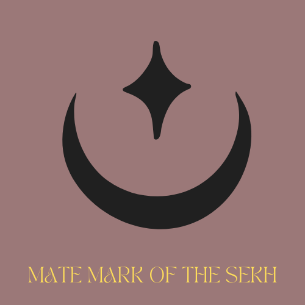

The Sekh
Reborn hunters of flame. Each was a mortal who walked the Dream, died in fire, and came back stronger, wiser and carrying their shadow within.
“What burns is alive. What endures is wise.”
Lines without a tag are settled canon from the Earth reference documents. Tags mark anything less settled. Nok spellings follow the current reference documents.
At a glance
- Name
- The Sekh, singular and plural. Pronounced “sek”, as in “seconds”.
- Native tongue
- Nọk, an agglutinative language.
- Place of origin
- Thamün’kebukhet, an ancient African empire and the cradle of Nẹránamün.
- Population
- About 100 to 150 worldwide. It has swelled to about 300 at moments of great threat. Every loss is felt.
- Age
- A Sekh stays the age they were at Rebirth. They cannot have children.
- Blood
- A special O-negative variant. Circulating blood decays at twice the human rate, and that decay powers most Sekh abilities.
- Initiating others
- Only a Sekh at least 100 years past their own Rebirth may Initiate a human.
- Eyes
- A Sekh keeps the natural eye colour they had before Rebirth, in every form. Oval pupils are the universal subtle tell. Gold irises appear only during mediation or ceremony, when ‘Èn’zíngámün moves through the medium, and in a brief pulse when the Khùzú awakens.
- Faith
- Nẹránamün, the faith of the Dream.
How the Sekh began
The Flame Queen, ‘Èn’zíngámün, watched mortals burn out before their fire had properly kindled. She resolved to reforge them: “stronger, wiser, carrying their shadows within.” Her first two attempts failed. The first was Chuki, an orphan child whose thread was too thin to hold, and only ash remained. The second was Kitwana, a proud warrior who did not survive the Mirror Trial. The third was Amadi, a soul that could hold the mirror steady without flinching.
Amadi became the First Sekh. She was born about 309 BCE among the Kweizimuna of the Bamenda highlands, at the foot of Mt. Cameroon, and was reborn in 289 BCE at the age of twenty. Decided Today she is the head priestess of all Sekh, with the title ‘Ạmázingamün.
Two animal selves
Every Sekh has exactly two animal forms, one big cat and one bird of prey. They are not guardians or companions. They are the Sekh’s own soul in two registers. Harm to one is felt in the other.
| Spirit | Meaning | Made by | Usual form |
|---|---|---|---|
| Khùzí | The born self. What the Sekh fundamentally is, revealed when Rebirth strips away everything constructed. | ‘Írábùkh, flow, the waxing moon | A big cat, present from Rebirth |
| Khùzú | The made self. What the Sekh becomes through trial, loss and relationship. | ‘Írubá, ebb, the waning moon | A bird of prey, awakened by a personal trial |
The Khùzú does not arrive on a schedule. About 100 years is only general guidance. When it wakes, a brief pulse of gold fires through the Sekh’s irises. Underneath, the two souls are Zhaní (the land-self or ego, expressed by Khùzí) and Zhané (the aerial self or id, expressed by Khùzú).
A rare few Sekh invert the pattern: bird first, cat later. They arrive already elevated and spend their years earning groundedness. Big cats include cheetah, cougar, jaguar, leopard, lion, snow leopard, tiger and clouded leopard. Birds come from the hawks and eagles, owls, vultures and falcons.
Shifting
- A Sekh must shift into one of their animal forms at least once a week. Suppressing either self causes real spiritual imbalance.
- The shift takes two seconds at most and is not painful. Humans nearby feel a wisp of warmth, then the animal is simply there.
- To another Sekh the outline briefly stops committing to one form, and the Rebirth fire shows as a heat-shimmer.
- Juniors look away when elders shift. It began as instinct and became a mark of respect.
- The animal form is larger and denser than any wild specimen of its species.
- Clothing does not shift by default. Objects the soul has claimed as its own travel with the Sekh. Elders can learn to extend the soul around clothing. Most Sekh keep spare clothes in cars and offices.
Abilities
| Ability | What it does |
|---|---|
| Senses, strength and speed | All senses are heightened. Strength is about ten times that of the strongest human under adrenaline. |
| Shapeshifting | Both animal forms, with a lean toward one of them. |
| Whisper | A voice that carries supernatural weight, usable in human form only. In encryption mode it makes Nọk unintelligible to non-Sekh ears. In compulsion mode it amplifies emotion and suggestion. To everyone nearby it sounds like a whisper, whatever the volume. |
| Invisibility | The body can still be smelled, touched and heard. It works especially well in daylight, when a Sekh has no shadow. |
| Healing | Surface wounds close in minutes and a severed limb regrows in days. Drugs and intoxicants wear off quickly. |
| No ageing | Rebirth rewrote the Sekh’s relationship with time. They are transformed, not artificially sustained. |
| Spirit summoning | In an emergency, near death, a Sekh’s animal spirit may appear on its own. |
Weaknesses
| Weakness | Detail |
|---|---|
| Sunlight | Blessed by Lòbárạmün through ‘Èn’zíngámün, Sekh can walk in the sun, but long exposure makes them ill and dulls their senses to near-human levels. They are strongest at dusk and dawn. |
| Large natural water | Kàtúngámün, the Death River, flows through every large natural body of water. It does not recognise a Sekh, who has died but is not dead, and it saps their strength. Rain and baths are harmless, rivers weaken, and the open ocean can kill. Wạdíyèmün, the Serpent Guardian of the crossings, regards the Sekh with particular confusion, because they are anomalies in her domain. |
| Lamiae blood | Toxic to Sekh. Small amounts cause vomiting and unconsciousness, and large amounts kill. The only cure is a transfusion of Sekh blood. Lamiae saliva is dangerous too, from mild to fatal. Each people has made weapons from this mutual poison. |
| Decapitation | A Sekh cannot regenerate without the head reattached and blood to sustain it. Decapitation plus blood loss within the hour is fatal. |
| Burnout | A Sekh trapped in a loop of constant regeneration, with no way to refill their reserves, will exhaust their thread and die. |
| Bloodlust | Every newly Reborn Sekh (a Sámètù) endures about a decade of predatory hunger, called sainyíz hábai’èshöbüng, which makes being near humans genuinely dangerous. How long it lasts reflects the soul’s character as much as the body. A few struggle beyond the decade, and in extreme cases must be contained or put down. |
Marks of a Sekh
- They cast no shadow. See Rebirth.
- The Khùnaimímaké, the moon-star mark, emerges on the skin at Rebirth. The Khùzí appears with it as a living tattoo.
Sekh blood
Sekh blood is a weapon and a hazard to nearly everyone else.
| On | Effect |
|---|---|
| Anu | An accelerant and an aphrodisiac, like amphetamine, with the same consequences. |
| Lamiae | Small amounts cause vomiting and unconsciousness. Large amounts are fatal. The cure is vomiting or bloodletting plus fresh human blood. |
| Humans, Zingans included | A steroid-like effect when it is not used in Rebirth, followed by a significant toll once the effects wear off. |
Mates: Miyema
Thómítámün sees what each being needs and marks them so they may come together, or not. Háshùmün blesses and warms the bond. Pairing is always optional, and it works whatever species the other party is. Decided
- The mark. It sits on opposing sides of the neck on the two mates.
- The effects. If one mate is in danger, the other feels it.
- Across species. The Sekh partner carries the mark and the recognition. The other party can receive the bond once they naturally love.
- When it breaks. Rejection or death feels like dying slowly a second time. The mark bruises and fades over months or years.
The Anu have their own expression of the same gift, with a bite at the base of the neck and a crescent-moon mark. See Rank, rites and bonds.
Relations with other peoples
| People | Relation |
|---|---|
| The Anu | Allies under the same pantheon. The Anu call the Sekh “Thread-runners.” |
| Zingans | The human faithful, including the Red Choir and the House of Ember. They practise Makésho, and many serve as acolytes. They are not bound to the Sekh. See Zingans. |
| The Lamiae | Older than the Sekh as a people and roughly equal in power. See The Lamiae. Their bloods are toxic to each other, and each has made weapons from it. The Lamiae signed the 1964 addendum to the Pact. |
| The Witches of Mephis | Opposed in principle, over souls that are trapped and tricked. The witches’ schools are a separate system. See The Witches of Mephis. |
| Pandora’s Pact | In practice the Sekh are the Pact’s enforcers. Its protection covers every human in and around Emsehurst. See Pandora’s Pact. |
The mate mark
